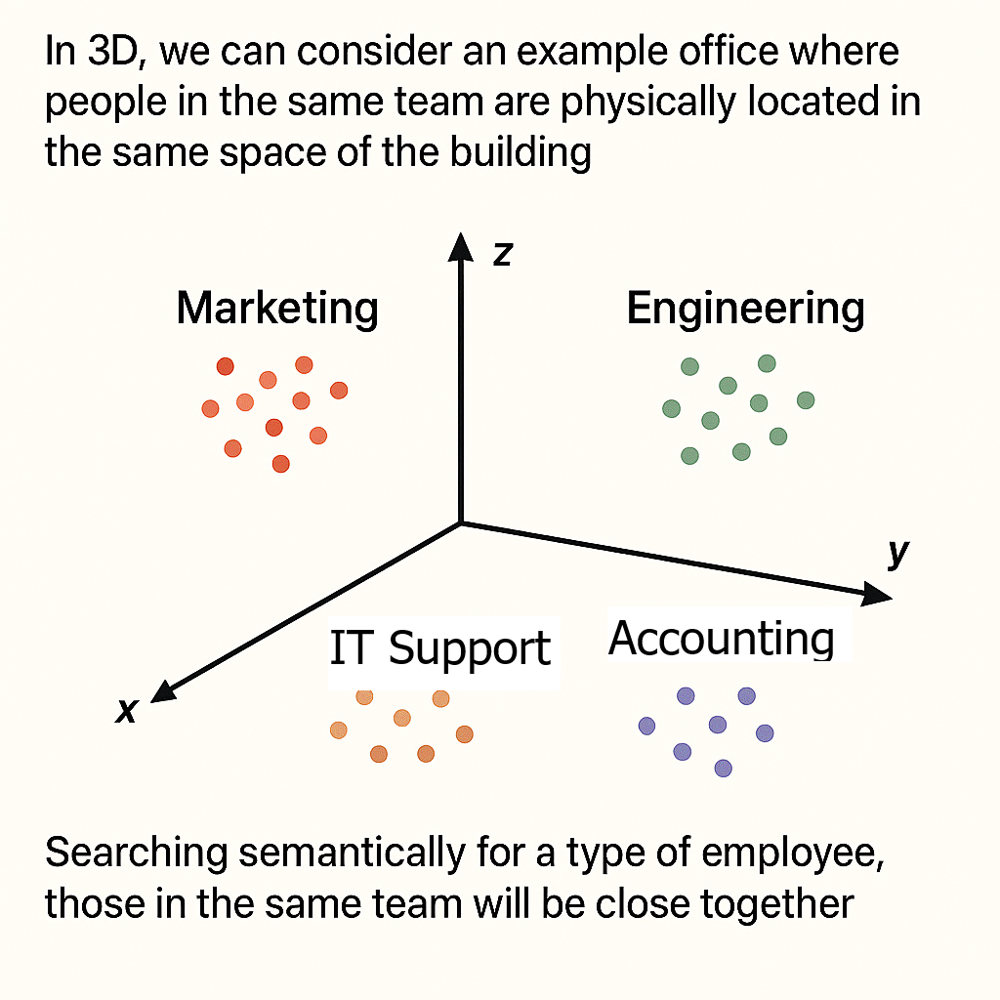

Vector Search & Distance Metrics:¶
A Complete Guide for WordPress and MySQL Developers
Modern search is no longer about matching exact words — it’s about understanding meaning. Vector search brings semantic intelligence to WordPress, MySQL, and any custom search pipeline by representing text as vectors (lists of numbers) and comparing them using distance metrics.
This document gives you a complete, developer‑friendly walkthrough of:
- What vector search is
- How embeddings work
- How similarity is calculated
- How different distance metrics behave
- How all of this fits into WordPress and MySQL search architecture
1. What Is Vector Search?¶
Traditional search engines (like WordPress’s default search or MySQL’s MATCH AGAINST) match exact words.
Example¶
Query: “car”
Keyword search finds documents containing “car” — but misses:
- automobile
- vehicle
- sedan
- SUV
Vector search understands concepts, not just words.
Vector Search¶
Query: “car”
Matches documents about:
- automobile
- vehicle
- sedan
- SUV
- truck
Because all these concepts live close together in semantic space.

2. Words as Points in Space¶
Embeddings convert text into vectors — numerical coordinates in a multi‑dimensional space.
Simple 2D Example¶
Y-axis (Vehicle Type)
│
5 │ 🚗 car
│
4 │ 🚙 SUV 🚕 taxi
│
3 │ 🚚 truck
│
2 │
│
1 │ 🐕 dog 🐱 cat
│
0 └─────────────────────── X-axis (Animal vs Vehicle)
0 1 2 3 4 5
Key idea:
Similar meanings → close together
Different meanings → far apart
Real embeddings have 384–1536 dimensions, but the principle is identical.
3. What Is a Vector?¶
A vector is simply a list of numbers.
2D Example¶
Real Embedding Example (768 dimensions)¶
Each dimension encodes some semantic feature (vehicle‑ness, speed, size, etc.).
4. How Vector Search Works¶
Step 1 — Convert Documents to Vectors¶
Each document is embedded into a vector.
Step 2 — Convert Query to Vector¶
The user’s query is embedded the same way.
Step 3 — Compare Vectors¶
Using a distance metric (cosine, Euclidean, dot product, etc.).
Step 4 — Rank by Similarity¶
Closest vectors = most relevant results.
This is where distance metrics become critical.
5. Cosine Similarity (The Semantic Search Standard)¶
Cosine similarity measures the angle between vectors — ignoring length.
[ \text{Cosine Similarity} = \frac{A \cdot B}{||A|| \cdot ||B||} ]
- 1.0 → identical direction
- 0.0 → unrelated
- -1.0 → opposite meaning
Cosine is the default for semantic search because it focuses on meaning, not magnitude.
6. Distance Metrics (WordPress & MySQL Context)¶
When implementing vector search in WordPress — via a plugin, custom table, or external vector DB — you must choose a distance metric.
Different metrics produce different rankings.
Below is a unified explanation of each metric, with diagrams and WordPress‑specific guidance.
6.1 Euclidean Distance (L2)¶
Straight‑line distance.
Meaning:
Measures literal geometric distance.
Best for:
- Embeddings where magnitude encodes meaning
- General vector search
WordPress use:
- Custom MySQL tables
- External vector DBs that default to L2
6.2 Manhattan Distance (L1)¶
Grid‑based movement.
Meaning:
Sum of absolute differences.
Best for:
- Sparse vectors (rare in NLP)
WordPress use:
- Experimental scoring only
6.3 Cosine Distance¶
Angle between vectors.
Meaning:
Measures similarity of direction.
Best for:
- Semantic search
- Sentence embeddings
WordPress use:
- Hybrid search (BM25 + embeddings)
- Most semantic search plugins
- Recommended default
6.4 Dot Product¶
Alignment × magnitude.
Meaning:
Rewards vectors that point the same way and have large magnitude.
Best for:
- Recommender systems
- Models trained for dot‑product scoring
WordPress use:
- Related posts
- Product recommendations
6.5 Chebyshev Distance¶
Largest single‑dimension difference.
Meaning:
“How bad is the worst mismatch?”
WordPress use:
- Outlier detection
- Quality control
Not used for semantic search.
6.6 Hamming Distance¶
Counts mismatched positions.
Meaning:
Only for binary vectors.
WordPress use:
- Duplicate detection
- Hash fingerprints
Not used for embeddings.
7. Summary Table¶
| Metric | Measures | Best For | WordPress Use |
|---|---|---|---|
| 🧭 Cosine | Angle | Semantic similarity | Best default for semantic search |
| 📏 Euclidean | Straight‑line distance | General vector search | Custom tables, vector DBs |
| 🎯 Dot Product | Alignment × magnitude | Recommenders | Related posts/products |
| 📐 Manhattan | Grid distance | Sparse vectors | Rare |
| 📊 Chebyshev | Max deviation | Outliers | Data validation |
| 🔢 Hamming | Mismatched bits | Binary vectors | Duplicate detection |
8. How This Fits Into WordPress Search Architecture¶
1. Default WordPress Search (LIKE)¶
No vectors. No semantics.
2. MySQL Full‑Text Search (MATCH AGAINST)¶
Lexical only — still no semantics.
3. Hybrid Search (BM25 + Embeddings)¶
Combine:
- BM25 for keyword precision
- Cosine similarity for semantic recall
This is the sweet spot for most WordPress sites.
4. Full Vector Search in MySQL¶
Store embeddings in a custom table (JSON, FLOAT[], etc.) and compute:
- Cosine
- Euclidean
- Dot product
- Manhattan
This gives you full semantic search without external services.
9. Real‑World Example: E‑commerce Search¶
Query: “comfortable shoes for running”
Keyword Search¶
Finds documents containing the exact words.
Misses synonyms like “sneakers”, “athletic”, “cushioned”.
Vector Search¶
Understands:
- sneakers ≈ shoes
- athletic ≈ running
- cushioned ≈ comfortable
Produces dramatically better results.
10. Multi‑Language Magic¶
Embeddings place meaning in the same space across languages.
English “cat”
French “chat”
German “Katze”
→ All cluster together.
This makes vector search inherently multilingual.
11. Advantages & Limitations¶
Advantages¶
- Understands meaning
- Handles synonyms
- Context‑aware
- Typo‑tolerant
- Multilingual
- Harder to game
Limitations¶
- Slower than keyword search
- Requires more storage
- Harder to explain
- Embedding generation costs CPU/GPU
- Sometimes you want exact matches
12. Quick Summary¶
Vector search in 5 points:
- Convert text → vectors
- Compare vectors using distance metrics
- Rank by similarity
- Understand meaning, not just words
- Works across languages